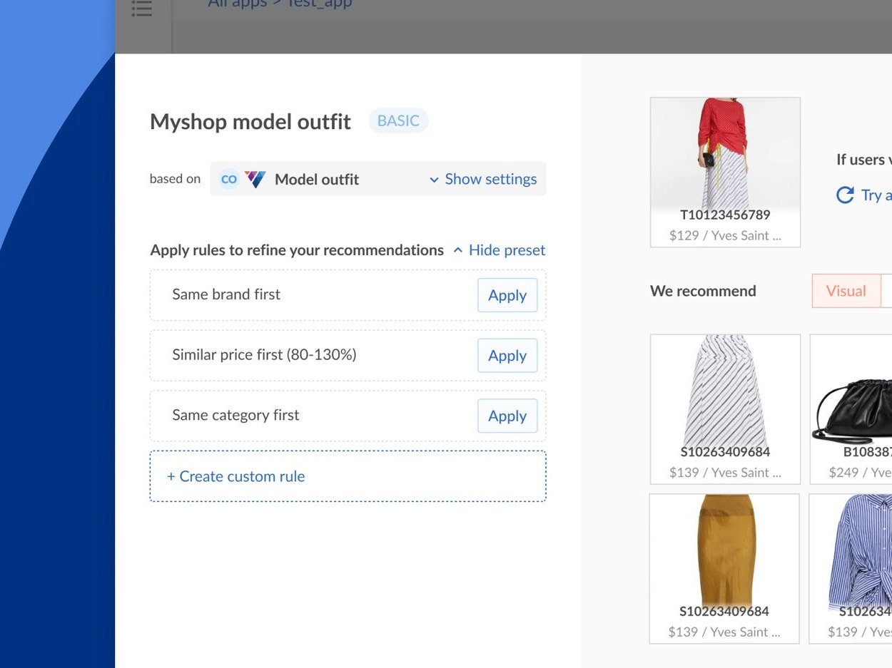

ViSenze · B2B e-commerce web app · 2021 Jul — Sep
Customizing Recommendations
Launching a new feature for a B2B e-commerce web application.

Rule panel with a live preview of what shoppers will see
Problem
Retailers wanted control over ML recommendations, but expert merchandisers couldn't make sense of a rule-based UI.
My role
Lead designer. Ran a design sprint with two designers; owned the final UX flow and signed off visual design.
Key decisions
After three rounds of testing, reframed the feature from system mechanics to merchandiser intent, and made presets the primary flow.
Outcome
Shipped the customization MVP. Clients on ViSenze recommendations reported +15% average order value (Zalora) and +7% conversion (EyeBuyDirect).